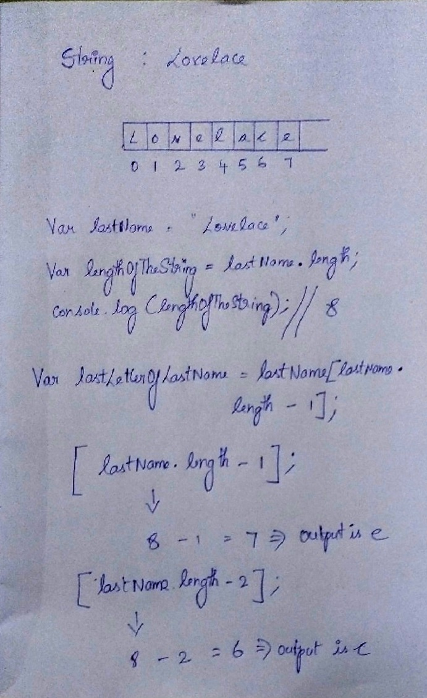

JavaScript Basics
JavaScript is a high-level programming language that all modern web browsers support. It is also one of the core technologies of the web JavaScript (JS) is a lightweight, interpreted, or just-in-time compiled programming language with first-class functions. JavaScript is a prototype-based, multi-paradigm, single-threaded, dynamic language, supporting object-oriented, imperative, and declarative (e.g. functional programming) styles.
Comment your JavaScript Code
There are two ways to write comments in JavaScript
// - single line comment
// this is an inline comment
/* */ - multi-line comment
/* This is a multi-line comment
Declare JavaScript Variables
Number of datatypes :
- Undefined
- Null
- Boolean
- Strings
- Symbol
- bigint
- Number
- Object
to create or declare a variable by putting the keyword var
Example:
var myname;
Variable names can be made up of numbers, letters, and $ or _, but may not contain spaces or start with a number.
storing values with the assignment operator
var myvar;
myvar = 10;
Assigning the Value of One Variable to Another
var myVar;
myVar = 5;
var myNum;
myNum = myVar;
Initializing Variables with the Assignment Operator
var myVar = 0;
Understanding Uninitialized Variables
When JavaScript variables are declared, they have an initial value of undefined. If you do a mathematical operation on an undefined variable your result will be NaN which means "Not a Number". If you concatenate a string with an undefined variable, you will get a literal string of "undefined".
Increment operator
i++;
i=i+1;
Decrement operator
i--;
i=i-1;
decimal number
var ourDecimal = 5.7;
Change the 0.0 so that quotient will equal to 2.2.
var quotient = 4.4 / 2.0;
Change the 0.0 so that product will equal 5.0.
var product = 2.0 * 2.5;
Finding a Remainder in JavaScript The remainder operator % gives the remainder of the division of two numbers.
5 % 2 = 1 because
Math.floor(5 / 2) = 2 (Quotient)
2 * 2 = 4
5 - 4 = 1 (Remainder)
Usage In mathematics, a number can be checked to be even or odd by checking the remainder of the division of the number by 2.
17 % 2 = 1 (17 is Odd)
48 % 2 = 0 (48 is Even)
Set remainder equal to the remainder of 11 divided by 3 using the remainder (%) operator.
var remainder;
remainder= 11 % 3;
console.log(remainder);
Compound Assignment With Augmented Addition, subtraction, multiplication and division
var a = 11;
var b = 9;
var c = 3;
var d = 29;
a += 11; // Augmented Addition
b -= 9; // Augmented subtraction
c *= 3; // Augmented multiplication
d /=29; // Augmented division
Strings
var myName = "your name";
"your name" is called a string literal
Create two new string variables: myFirstName and myLastName and assign them the values of your first and last name, respectively.
var myFirstName;
var myLastName;
myFirstName = "Satya";
myLastName = "Sridevi";
//Other way
var myFirstName = "Satya";
var myLastName = "Sridevi";
Escaping Literal Quotes in Strings When you are defining a string you must start and end with a single or double quote. What happens when you need a literal quote: " or ' inside of your string? you can escape a quote from considering it as an end of string quote by placing a backslash (\) in front of the quote.
var sampleStr = "Alan said, \"Peter is learning JavaScript\".";
Use backslashes to assign a string to the myStr variable so that if you were to print it to the console, you would see:
I am a "double quoted" string inside "double quotes".
var myStr = "I am a \"double quoted\" string inside \"double quotes\".";
Quoting Strings with Single Quotes single and double quotes work the same in JavaScript
doubleQuoteStr = "This is a string";
singleQuoteStr = 'This is also a string';
conversation = 'Finn exclaims to Jake, "Algebraic!"'; // works ok but there is a problem
badStr = 'Finn responds, "Let's go!"'; // Throws an error
Escape Sequences in Strings

Concatenating Strings with Plus Operator Build myStr from the strings "This is the start. " and "This is the end." using the + operator.
var myStr="This is the start. " + "This is the end.";// This is the start. This is the end.
Concatenating Strings with the Plus Equals Operator
var ourStr = "I come first. ";
ourStr += "I come second.";
// ourStr is now "I come first. I come second."
Constructing Strings with Variables
var ourName = "freeCodeCamp";
var ourStr = "Hello, our name is " + ourName + ", how are you?";
// ourStr is now "Hello, our name is freeCodeCamp, how are you?"
Set myName to a string equal to your name and build myStr with myName between the strings "My name is " and " and I am well!"
var myName = "satya sridevi";
var myStr = "My name is " + myName + " and I am well!";
// My name is satya sridevi and I am well!
Appending Variables to Strings
var anAdjective = "awesome!";
var ourStr = "freeCodeCamp is ";
ourStr += anAdjective;
// ourStr is now "freeCodeCamp is awesome!"
Challenge: Set someAdjective and append it to myStr using the += operator
var someAdjective ="awesome";
var myStr = "Learning to code is ";
myStr += someAdjective;//Learning to code is awesome
Find the Length of a String
You can find the length of a String value by writing .length
Challenge: Use the .length property to count the number of characters in the lastName variable and assign it to lastNameLength.
var lastNameLength;
var lastName = "Lovelace";
lastNameLength = lastName.length;
console.log(lastNameLength);// output : 8
Use Bracket Notation to Find the First Character in a String
Bracket notation is a way to get a character at a specific index within a string.
Most modern programming languages, like JavaScript, don't start counting at 1 like humans do. They start at 0. This is referred to as Zero-based indexing.
Example
var firstName = "Charles";
var firstLetter = firstName[0]; // firstLetter is "C"
Challenge: Use bracket notation to find the first character in the lastName variable and assign it to firstLetterOfLastName.
var firstLetterOfLastName = "";
var lastName = "Lovelace";
firstLetterOfLastName = lastName[0];
console.log(firstLetterOfLastName);// The Output is L
Understand String Immutability
In JavaScript, String values are immutable, which means that they cannot be altered once created.this does not mean that myStr cannot be changed, just that the individual characters of a string literal cannot be changed. The only way to change myStr would be to assign it with a new string
Challenge: Correct the assignment to myStr so it contains the string value of Hello World
var myStr = "Jello World";
myStr = "Hello World";
console.log(myStr); //The output is Hello World
Use Bracket Notation to Find the Nth Character in a String
Challenge: Let's try to set thirdLetterOfLastName to equal the third letter of the lastName variable using bracket notation.
var lastName = "Lovelace";
var thirdLetterOfLastName = lastName[2];
console.log(thirdLetterOfLastName);// the Output is v
Use Bracket Notation to Find the Last Character in a String
In order to get the last letter of a string, you can subtract one from the string's length.
Challenge: Use bracket notation to find the last character in the lastName variable.

var lastName = "Lovelace";
var lengthOfTheString = lastName.length;
console.log(lengthOfTheString);// the output is 8
var lastLetterOfLastName = lastName[lastName.length - 1];
console.log(lastLetterOfLastName);// The Output is e
Use Bracket Notation to Find the Nth-to-Last Character in a String
var lastLetterOfLastName = lastName[lastName.length - 3];
console.log(lastLetterOfLastName);// The Output is a
Word Blanks
In this challenge, we provide you with a noun, a verb, an adjective and an adverb. You need to form a complete sentence using words of your choice, along with the words we provide.
You will need to use the string concatenation operator + to build a new string, using the provided variables: myNoun, myAdjective, myVerb, and myAdverb. You will then assign the formed string to the wordBlanks variable. You should not change the words assigned to the variables.
You will also need to account for spaces in your string, so that the final sentence has spaces between all the words. The result should be a complete sentence.
var myNoun = "dog";
var myAdjective = "big";
var myVerb = "ran";
var myAdverb = "quickly";
var wordBlanks = myAdjective + " " + myNoun + " " + myVerb + " "+ myAdverb ;
console.log(wordBlanks);
Arrays
Store Multiple Values in one Variable using JavaScript Arrays
With JavaScript array variables, we can store several pieces of data in one place.
var sandwich = ["peanut butter", "jelly", "bread"];
Nest one Array within Another Array
You can also nest arrays within other arrays, like below:
var myArray = [["Bulls", 23], ["White Sox", 45]];
Access Array Data with Indexes
We can access the data inside arrays using indexes. ike strings, arrays use zero-based indexing, so the first element in an array has an index of 0.
Example:
var array = [50,60,70];
array[0]; // equals 50
var data = array[1]; // equals 60
Challenge: Create a variable called myData and set it to equal the first value of myArray using bracket notation.
var myArray = [50,60,70];
var myData = myArray[0];
console.log(myData);
Modify Array Data With Indexes
Unlike strings, the entries of arrays are mutable and can be changed freely.
var ourArray = [50,40,30];
ourArray[0] = 15; // equals [15,40,30]
Challenge: Modify the data stored at index 0 of myArray to a value of 45.
var myArray = [18,64,99];
myArray[0] = 45;
console.log(myArray);
Access Multi-Dimensional Arrays With Indexes
Example
var arr = [
[1,2,3],
[4,5,6],
[7,8,9],
[[10,11,12], 13, 14]
];
arr[3]; // equals [[10,11,12], 13, 14]
arr[3][0]; // equals [10,11,12]
arr[3][0][1]; // equals 11
Challenge: Using bracket notation select an element from myArray such that myData is equal to 8.
var myArray = [[1,2,3], [4,5,6], [7,8,9], [[10,11,12], 13, 14]];
var myData = myArray[2][1];
console.log(myData);
Manipulate Arrays With push()
An easy way to append data to the end of an array is via the push() function. .push() takes one or more parameters and "pushes" them onto the end of the array.
Example
var arr1 = [1,2,3];
arr1.push(4);
// arr1 is now [1,2,3,4]
var arr2 = ["Stimpson", "J", "cat"];
arr2.push(["happy", "joy"]);
// arr2 now equals ["Stimpson", "J", "cat", ["happy", "joy"]];
Challenge : Push ["dog", 3] onto the end of the myArray variable.
var myArray = [["John", 23], ["cat", 2]];
myArray.push(["dog",3]);
console.log(myArray); [ [ 'John', 23 ], [ 'cat', 2 ], [ 'dog', 3 ] ]
Manipulate Arrays With pop()
Another way to change the data in an array is with the .pop() function. .pop() is used to "pop" a value off of the end of an array. We can store this "popped off" value by assigning it to a variable. In other words, .pop() removes the last element from an array and returns that element.
var threeArr = [1, 4, 6];
var oneDown = threeArr.pop();
console.log(oneDown); // Returns 6
console.log(threeArr); // Returns [1, 4]
Challenge: Use the .pop() function to remove the last item from myArray, assigning the "popped off" value to removedFromMyArray.
var myArray = [["John", 23], ["cat", 2]];
var removedFromMyArray = myArray.pop();
console.log(removedFromMyArray);
console.log(myArray);
Manipulate Arrays With shift()
pop() always removes the last element of an array. What if you want to remove the first? That's where .shift() comes in. It works just like .pop(), except it removes the first element instead of the last.
Example: var ourArray = ["Stimpson", "J", ["cat"]];
var removedFromOurArray = ourArray.shift();
// removedFromOurArray now equals "Stimpson" and ourArray now equals ["J", ["cat"]].
Challenge: Use the .shift() function to remove the first item from myArray, assigning the "shifted off" value to removedFromMyArray.
var myArray = [["John", 23], ["dog", 3]];
var removedFromMyArray = myArray.shift();
console.log(removedFromMyArray);
Manipulate Arrays With unshift()
Not only can you shift elements off of the beginning of an array, you can also unshift elements to the beginning of an array i.e. add elements in front of the array. .unshift() works exactly like .push(), but instead of adding the element at the end of the array, unshift() adds the element at the beginning of the array.
var ourArray = ["Stimpson", "J", "cat"];
ourArray.shift(); // ourArray now equals ["J", "cat"]
ourArray.unshift("Happy");
// ourArray now equals ["Happy", "J", "cat"]
Challenge: Add ["Paul",35] to the beginning of the myArray variable using unshift().
var myArray = [["John", 23], ["dog", 3]];
myArray.shift();
myArray.unshift(["Paul",35]);
Shopping List
Challenge: Create a shopping list in the variable myList. The list should be a multi-dimensional array containing several sub-arrays. The first element in each sub-array should contain a string with the name of the item. The second element should be a number representing the quantity i.e. ["Chocolate Bar", 15] There should be at least 5 sub-arrays in the list.
var myList = [["candy",10], ["Ice Cream", 3],
["Biscuits", 20], ["lollipops", 5], ["jelly", 1]];
console.log(myList);
Write reusable javascript using functions.
In JavaScript, we can divide up our code into reusable parts called functions
function functionName()
{
console.log("Hello World");
}
You can call or invoke this function by using its name followed by parentheses, like this: functionName(); Each time the function is called it will print out the message "Hello World" on the dev console. All of the code between the curly braces will be executed every time the function is called.
Challenges: Create a function called reusableFunction which prints "Hi World" to the dev console.Call the function
function reusableFunction()
{
console.log("Hi World");
}
reusableFunction();
Passing Values to Functions with Arguments
Parameters are variables that act as placeholders for the values that are to be input to a function when it is called. When a function is defined, it is typically defined along with one or more parameters. The actual values that are input (or "passed") into a function when it is called are known as arguments.
Challenge: Create a function called functionWithArgs that accepts two arguments and outputs their sum to the dev console. Call the function with two numbers as arguments.
function functionWithArgs(a,b)
{
var c = a + b;
console.log(c);
}
functionWithArgs(10,10);
Global scope and Functions
In JavaScript, scope refers to the visibility of variables. Variables which are defined outside of a function block have Global scope. This means, they can be seen everywhere in your JavaScript code.
Challenge: Using var, declare a global variable named myGlobal outside of any function. Initialize it with a value of 10. Inside function fun1, assign 5 to oopsGlobal without using the var keyword.
var myGlobal =10;
function fun1()
{
oopsGlobal = 5;
}
function fun2()
{
var output = "";
if (typeof myGlobal != "undefined") {
output += "myGlobal: " + myGlobal;
}
if (typeof oopsGlobal != "undefined")
{
output += " oopsGlobal: " + oopsGlobal;
}
console.log(output);
}
Local Scope and Functions
Variables which are declared within a function, as well as the function parameters have local scope. That means, they are only visible within that function.
function myLocalScope() {
'use strict';
var myVar;// undefined
console.log('inside myLocalScope', myVar);
}
myLocalScope();// function called. output will be "inside myLocalScope undefined"
console.log('outside myLocalScope', myVar);// myVar called outside the function
// because myVar is local variable.
Global vs. Local Scope in Functions
It is possible to have both local and global variables with the same name. When you do this, the local variable takes precedence over the global variable.
var outerWear = "T-Shirt";
function myOutfit()
{
var outerWear = "sweater";
return outerWear;
}
myOutfit();
Return a Value from a Function with Return
We can pass values into a function with arguments. You can use a return statement to send a value back out of a function.
function plusThree(num)
{
return num + 3;
}
var answer = plusThree(5); // 8
Challenge: Create a function timesFive that accepts one argument, multiplies it by 5, and returns the new value. See the last line in the editor for an example of how you can test your timesFive function.
function timesFive(a)
{
return a * 5;
}
timesFive(5);
Understanding Undefined Value returned from a Function
A function can include the return statement but it does not have to. In the case that the function doesn't have a return statement, when you call it, the function processes the inner code but the returned value is undefined.
var sum = 0;
function addSum(num)
{
sum = sum + num;
}
addSum(3);
Challenge: Create a function addFive without any arguments. This function adds 5 to the sum variable, but its returned value is undefined.
var sum = 0;
function addThree()
{
sum = sum + 3;
}
function addFive()
{
sum = sum + 5;
}
addThree();
addFive();
Assignment with a Returned Value
If you'll recall from our discussion of Storing Values with the Assignment Operator, everything to the right of the equal sign is resolved before the value is assigned. This means we can take the return value of a function and assign it to a variable.
challenge: Call the processArg function with an argument of 7 and assign its return value to the variable processed.
var processed = 0;
function processArg(num)
{
return (num + 3) / 5;
}
processed = processArg(7);
Challenge: Stand In Line
In Computer Science a queue is an abstract Data Structure where items are kept in order. New items can be added at the back of the queue and old items are taken off from the front of the queue. Write a function nextInLine which takes an array (arr) and a number (item) as arguments. Add the number to the end of the array, then remove the first element of the array. The nextInLine function should then return the element that was removed.
function nextInLine(arr, item)
{
arr.push(item); //pushes 7 end of the array
var removed = arr.shift(); remove the first item of the array
return removed;
return item;
}
var testArr = [1,2,3,4,5];
console.log("Before: " + JSON.stringify(testArr));
console.log(nextInLine(testArr, 7));// arr -> testArr and 7 -> item to push
console.log("After: " + JSON.stringify(testArr));
Understanding Boolean Values
Another data type is the Boolean. Booleans may only be one of two values: true or false. They are basically little on-off switches, where true is "on" and false is "off." These two states are mutually exclusive
Challenge: Modify the welcomeToBooleans function so that it returns true instead of false when the run button is clicked.
function welcomeToBooleans()
{
return true;
}
Use Conditional Logic with If Statements
If statements are used to make decisions in code. The keyword if tells JavaScript to execute the code in the curly braces under certain conditions, defined in the parentheses. These conditions are known as Boolean conditions and they may only be true or false. When the condition evaluates to true, the program executes the statement inside the curly braces. When the Boolean condition evaluates to false, the statement inside the curly braces will not execute.
function trueOrFalse(wasThatTrue) {
if (wasThatTrue)
{
return "Yes, that was true";
}
return "No, that was false";
}
Comparison with the Equality Operator
There are many comparison operators in JavaScript. All of these operators return a boolean true or false value. The most basic operator is the equality operator ==. The equality operator compares two values and returns true if they're equivalent or false if they are not. Note that equality is different from assignment (=), which assigns the value on the right of the operator to a variable on the left.
n order for JavaScript to compare two different data types (for example, numbers and strings), it must convert one type to another. This is known as "Type Coercion
1 == 1 // true
1 == 2 // false
1 == '1' // true
"3" == 3 // true
Challenge: Add the equality operator to the indicated line so that the function will return "Equal" when val is equivalent to 12.
function testEqual(val) {
if (val == 12) {
return "Equal";
}
return "Not Equal";
}
testEqual(10);
Comparison with the Strict Equality Operator
Strict equality (===) is the counterpart to the equality operator (==). However, unlike the equality operator, which attempts to convert both values being compared to a common type, the strict equality operator does not perform a type conversion. If the values being compared have different types, they are considered unequal, and the strict equality operator will return false.
3 === 3 // true
3 === '3' // false
Challenge: Use the strict equality operator in the if statement so the function will return "Equal" when val is strictly equal to 7
function testStrict(val) {
if (val === 7)
{
return "Equal";
}
return "Not Equal";
}
testStrict(10);
Practice comparing different values
function compareEquality(a, b) {
if (a === b) { // Change this line
return "Equal";
}
return "Not Equal";
}
compareEquality(10, "10");
Comparison with the Inequality Operator
The inequality operator (!=) is the opposite of the equality operator. It means "Not Equal" and returns false where equality would return true and vice versa. Like the equality operator, the inequality operator will convert data types of values while comparing.
1 != 2 // true
1 != "1" // false
1 != '1' // false
1 != true // false
0 != false // false
challenge: Add the inequality operator != in the if statement so that the function will return "Not Equal" when val is not equivalent to 99
function testNotEqual(val) {
if (val != 99) { // Change this line
return "Not Equal";
}
return "Equal";
}
testNotEqual(10);
Comparison with the Strict Inequality Operator
The strict inequality operator (!==) is the logical opposite of the strict equality operator. It means "Strictly Not Equal" and returns false where strict equality would return true and vice versa. Strict inequality will not convert data types.
3 !== 3 // false
3 !== '3' // true
4 !== 3 // true
Challenge: Add the strict inequality operator to the if statement so the function will return "Not Equal" when val is not strictly equal to 17
function testStrictNotEqual(val) {
if (val !== 17) { // Change this line
return "Not Equal";
}
return "Equal";
}
testStrictNotEqual(10);
Comparison with the Greater Than Operator Passed
The greater than operator (>) compares the values of two numbers. If the number to the left is greater than the number to the right, it returns true. Otherwise, it returns false.
function testGreaterThan(val) {
if (val > 100) {
return "Over 100";
}
if (val > 10) {
return "Over 10";
}
return "10 or Under";
}
testGreaterThan(10);
Comparison with the Greater Than Or Equal To OperatorPassed
The greater than or equal to operator (>=) compares the values of two numbers. If the number to the left is greater than or equal to the number to the right, it returns true. Otherwise, it returns false.
6 >= 6 // true
7 >= '3' // true
2 >= 3 // false
'7' >= 9 // false
challenges : Add the greater than or equal to operator to the indicated lines so that the return statements make sense.
function testGreaterOrEqual(val) {
if (val >= 20) {
return "20 or Over";
}
if (val >= 10) {
return "10 or Over";
}
return "Less than 10";
}
testGreaterOrEqual(10);
Comparison with the Less Than Operator
The less than operator (<) compares the values of two numbers. If the number to the left is less than the number to the right, it returns true. Otherwise, it returns false. Like the equality operator, less than operator converts data types while comparing.
2 < 5 // true
'3' < 7 // true
5 < 5 // false
3 < 2 // false
'8' < 4 // false
challenge:
function testLessThan(val) {
if (val<25) { // Change this line
return "Under 25";
}
if (val<55) { // Change this line
return "Under 55";
}
return "55 or Over";
}
testLessThan(10);
Comparison with the Less Than Or Equal To Operator
The less than or equal to operator (<=) compares the values of two numbers. If the number to the left is less than or equal to the number to the right, it returns true. If the number on the left is greater than the number on the right, it returns false. Like the equality operator, less than or equal to converts data types.
4 <= 5 // true
'7' <= 7 // true
5 <= 5 // true
3 <= 2 // false
'8' <= 4 // false
function testLessOrEqual(val) {
if (val<=12) {
return "Smaller Than or Equal to 12";
}
if (val<=24) {
return "Smaller Than or Equal to 24";
}
return "More Than 24";
}
testLessOrEqual(10);
Comparisons with the Logical And Operator
Sometimes you will need to test more than one thing at a time. The logical and operator (&&) returns true if and only if the operands to the left and right of it are true.
Example code
if (num>5 && num<10) {
return "Yes";
}
return "No";
Challenge:Replace the two if statements with one statement, using the && operator, which will return "Yes" if val is less than or equal to 50 and greater than or equal to 25. Otherwise, will return "No".
function testLogicalAnd(val) {
if (val<=50 && val>=25)
{
return "Yes";
}
return "No";
}
testLogicalAnd(10);
Comparisons with the Logical Or Operator
The logical or operator (||) returns true if either of the operands is true. Otherwise, it returns false. The logical or operator is composed of two pipe symbols: (||). This can typically be found between your Backspace and Enter keys.
Challenge: Combine the two if statements into one statement which returns "Outside" if val is not between 10 and 20, inclusive. Otherwise, return "Inside"
function testLogicalOr(val) {
if (val<10 || val>20) {
return "Outside";
}
return "Inside";
}
testLogicalOr(15)
Introducing Else Statements
When a condition for an if statement is true, the block of code following it is executed. What about when that condition is false? Normally nothing would happen. With an else statement, an alternate block of code can be executed.
Challenge: Combine the if statements into a single if/else statement.
function testElse(val) {
var result = "";
if (val>5 && val>=5) {
return "Bigger than 5";
}
else {
return "5 or Smaller";
}
return result;
}
testElse(10);
Introducing Else If Statements
If you have multiple conditions that need to be addressed, you can chain if statements together with else if statements.
if(num>15) {
return "Bigger than 15";
}
else if(num<5) {
return "Smaller than 5";
} else {
return "Between 5 and 15";
}
challenge: Convert the logic to use else if statements
function testElseIf(val) {
if (val>10) {
return "Greater than 10";
}
else if(val<5) {
return "Smaller than 5";
}
else
{
return "Between 5 and 10";
}
testElseIf(7);
}
Logical Order in If Else Statements
Order is important in if, else if statements. The function is executed from top to bottom so you will want to be careful of what statement comes first.
function orderMyLogic(val) {
if (val<5) {
return "Less than 5";
} else if (val<10) {
return "Less than 10";
} else {
return "Greater than or equal to 10";
}
}
orderMyLogic(4);
orderMyLogic(6);
orderMyLogic(11);
Chaining If Else Statements
if/else statements can be chained together for complex logic. Here is pseudocode of multiple chained if / else if statements:
if (condition1) {
statement1
} else if (condition2) {
statement2
} else if (condition3) {
statement3
. . .
} else {
statementN
}
Write chained if/else if statements to fulfill the following conditions: num < 5 - return "Tiny" num < 10 - return "Small" num < 15 - return "Medium" num < 20 - return "Large" num >= 20 - return "Huge"
function testSize(num) {
// Only change code below this line
if (num<5)
{
return "Tiny";
}
else if (num<10)
{
return "Small";
}
else if (num < 15)
{
return "Medium";
}
else if (num < 20)
{
return "Large";
}
else if (num >= 20)
{
return "Huge";
}
else
{
return "Change Me";
}
}
testSize(0);
testSize(4);
testSize(5);
testSize(8);
testSize(10);
testSize(14);
testSize(15);
testSize(17);
testSize(20);
testSize(25);
Golf Code
In the game of golf each hole has a par meaning the average number of strokes a golfer is expected to make in order to sink the ball in a hole to complete the play. Depending on how far above or below par your strokes are, there is a different nickname. Your function will be passed par and strokes arguments. Return the correct string according to this table which lists the strokes in order of priority; top (highest) to bottom (lowest):
Strokes Return
1 "Hole-in-one!"
<= par - 2 "Eagle"
par - 1 "Birdie"
par "Par"
par + 1 "Bogey"
par + 2 "Double Bogey"
>= par + 3 "Go Home!
var names = ["Hole-in-one!", "Eagle", "Birdie", "Par", "Bogey", "Double Bogey", "Go Home!"];
function golfScore(par, strokes) {
if (strokes === 1 )
{
return "Hole-in-one!";
}
else if(strokes <= (par - 2))
{
return "Eagle";
}
else if(strokes === (par - 1))
{
return "Birdie";
}
else if(strokes === par)
{
return "Par";
}
else if(strokes === (par + 1))
{
return "Bogey";
}
else if(strokes === (par + 2))
{
return "Double Bogey";
}
else if(strokes >= (par + 3))
{
return "Go Home!";
}
return "Change Me";
}
golfScore(4, 1);
golfScore(4, 2);
golfScore(5, 2);
golfScore(4, 3);
golfScore(4, 4);
golfScore(1, 1);
golfScore(5, 5);
golfScore(4, 5);
golfScore(4, 6);
golfScore(4, 7);
golfScore(5, 9);
Selecting from Many Options with Switch Statements
If you have many options to choose from, use a switch statement. A switch statement tests a value and can have many case statements which define various possible values. Statements are executed from the first matched case value until a break is encountered. Here is an example of a switch statement
switch(lowercaseLetter) {
case "a":
console.log("A");
break;
case "b":
console.log("B");
break;
}
case values are tested with strict equality (===). The break tells JavaScript to stop executing statements. If the break is omitted, the next statement will be executed.
challenge : Write a switch statement which tests val and sets answer for the following conditions: 1 - "alpha" 2 - "beta" 3 - "gamma" 4 - "delta"
function caseInSwitch(val) {
var answer = "";
// Only change code below this line
switch(val)
{
case 1:
return "alpha";
break;
case 2:
return "beta";
break;
case 3:
return "gamma";
break;
case 4:
return "delta";
break;
}
return answer;
}
caseInSwitch(1);
caseInSwitch(2);
caseInSwitch(3);
caseInSwitch(4);
Adding a Default Option in Switch Statements
In a switch statement you may not be able to specify all possible values as case statements. Instead, you can add the default statement which will be executed if no matching case statements are found. Think of it like the final else statement in an if/else chain.
switch (num) {
case value1:
statement1;
break;
case value2:
statement2;
break;
...
default:
defaultStatement;
break;
}
challenge: Write a switch statement to set answer for the following conditions: "a" - "apple" "b" - "bird" "c" - "cat" default - "stuff"
function switchOfStuff(val) {
var answer = "";
// Only change code below this line
switch(val)
{
case "a":
return "apple";
break;
case "b":
return "bird";
break;
case "c":
return "cat";
break;
default:
return "stuff";
break;
}
return answer;
}
switchOfStuff(1);
Multiple Identical Options in Switch Statements
If the break statement is omitted from a switch statement's case, the following case statement(s) are executed until a break is encountered. If you have multiple inputs with the same output, you can represent them in a switch statement like
switch(val) {
case 1:
case 2:
case 3:
result = "1, 2, or 3";
break;
case 4:
result = "4 alone";
}
Cases for 1, 2, and 3 will all produce the same result.
Challenge: Write a switch statement to set answer for the following ranges: 1-3 - "Low" 4-6 - "Mid" 7-9 - "High"
function sequentialSizes(val) {
var answer = "";
// Only change code below this line
switch(val)
{
case 1:
case 2:
case 3:
return "Low";
break;
case 4:
case 5:
case 6:
return "Mid";
break;
case 7:
case 8:
case 9:
return "High";
break;
}
return answer;
}
sequentialSizes(1);
sequentialSizes(2);
sequentialSizes(3);
sequentialSizes(4);
sequentialSizes(5);
sequentialSizes(6);
sequentialSizes(7);
sequentialSizes(8);
sequentialSizes(9);
Replacing If Else Chains with Switch
If you have many options to choose from, a switch statement can be easier to write than many chained if/else if statements. The following:
if (val === 1) {
answer = "a";
} else if (val === 2) {
answer = "b";
} else {
answer = "c";
}
switch(val) {
case 1:
answer = "a";
break;
case 2:
answer = "b";
break;
default:
answer = "c";
}
challenge
function chainToSwitch(val) {
var answer = "";
// Only change code below this line
switch(val)
{
case "bob":
answer = "Marley";
break;
case 42:
answer = "The Answer";
break;
case 1:
answer = "There is no #1";
break;
case 99:
answer = "Missed me by this much!";
break;
case 7:
answer = "Ate Nine";
}
return answer;
}
chainToSwitch(7);
chainToSwitch("bob");
chainToSwitch(42);
chainToSwitch(1);
chainToSwitch(99);
chainToSwitch(7);
chainToSwitch("john");
chainToSwitch(156);
Returning Boolean Values from Functions
You may recall from Comparison with the Equality Operator that all comparison operators return a boolean true or false value.
Sometimes people use an if/else statement to do a comparison, like this:
function isEqual(a,b) {
if (a === b) {
return true;
} else {
return false;
}
}
But there's a better way to do this. Since === returns true or false, we can return the result of the comparison:
function isEqual(a,b) {
return a === b;
}
challenge
function isLess(a, b)
{
if (a < b) {
return true;
} else {
return false;
}
}
isLess(10, 15);
////////////////////////////////////////
function isLess(a, b)
{
return a < b;
}
isLess(10, 15);
Return Early Pattern for Functions
When a return statement is reached, the execution of the current function stops and control returns to the calling location.The above outputs "Hello" to the console, returns "World", but "byebye" is never output, because the function exits at the return statement.
function myFun()
{
console.log("Hello");
return "World";
console.log("byebye")
}
myFun();
Challenge: Modify the function abTest so that if a or b are less than 0 the function will immediately exit with a value of undefined.
function abTest(a, b) {
if (a < 0 || b < 0)
{
return undefined;
}
return Math.round(Math.pow(Math.sqrt(a) + Math.sqrt(b), 2));
}
abTest(2,2);
Counting Cards
In the casino game Blackjack, a player can gain an advantage over the house by keeping track of the relative number of high and low cards remaining in the deck. This is called Card Counting. Having more high cards remaining in the deck favors the player. Each card is assigned a value according to the table below. When the count is positive, the player should bet high. When the count is zero or negative, the player should bet low.
You will write a card counting function. It will receive a card parameter, which can be a number or a string, and increment or decrement the global count variable according to the card's value (see table). The function will then return a string with the current count and the string Bet if the count is positive, or Hold if the count is zero or negative. The current count and the player's decision (Bet or Hold) should be separated by a single space.
var count = 0;
function cc(card)
{
switch(card)
{
case 2:
case 3:
case 4:
case 5:
case 6:
count++;
break;
case 10:
case 'J':
case 'Q':
case 'K':
case 'A':
count--;
break;
}
if (count > 0)
{
return count + " Bet";
}
else
{
return count + " Hold";
}
return "Change Me";
}
cc(10); cc('J'); cc('Q'); cc('K'); cc('A');
Build JavaScript Objects
You may have heard the term object before. Objects are similar to arrays, except that instead of using indexes to access and modify their data, you access the data in objects through what are called properties. Objects are useful for storing data in a structured way, and can represent real world objects, like a cat.
var cat = {
"name": "Whiskers",
"legs": 4,
"tails": 1,
"enemies": ["Water", "Dogs"]
};
In this example, all the properties are stored as strings, such as - "name", "legs", and "tails". However, you can also use numbers as properties. You can even omit the quotes for single-word string properties, as follows:
var anotherObject = {
make: "Ford",
5: "five",
"model": "focus"
};
However, if your object has any non-string properties, JavaScript will automatically typecast them as strings.
Accessing Object Properties with Dot Notation
There are two ways to access the properties of an object: dot notation (.) and bracket notation ([]), similar to an array. Dot notation is what you use when you know the name of the property you're trying to access ahead of time. Here is a sample of using dot notation (.) to read an object's property:
var myObj = {
prop1: "val1",
prop2: "val2"
};
var prop1val = myObj.prop1; // val1
var prop2val = myObj.prop2; // val2
Challenge: Read in the property values of testObj using dot notation. Set the variable hatValue equal to the object's property hat and set the variable shirtValue equal to the object's property shirt.
var testObj = {
"hat": "ballcap",
"shirt": "jersey",
"shoes": "cleats"
};
var hatValue = testObj.hat;
var shirtValue = testObj.shirt;
Accessing Object Properties with Bracket Notation
The second way to access the properties of an object is bracket notation ([]). If the property of the object you are trying to access has a space in its name, you will need to use bracket notation. However, you can still use bracket notation on object properties without spaces. Here is a sample of using bracket notation to read an object's property:
var myObj = {
"Space Name": "Kirk",
"More Space": "Spock",
"NoSpace": "USS Enterprise"
};
myObj["Space Name"]; // Kirk
myObj['More Space']; // Spock
myObj["NoSpace"]; // USS Enterprise
challenge: Read the values of the properties "an entree" and "the drink" of testObj using bracket notation and assign them to entreeValue and drinkValue respectively.
var testObj = {
"an entree": "hamburger",
"my side": "veggies",
"the drink": "water"
};
var entreeValue = testObj["an entree"];
var drinkValue = testObj["the drink"];
Accessing Object Properties with Variables
Another use of bracket notation on objects is to access a property which is stored as the value of a variable. This can be very useful for iterating through an object's properties or when accessing a lookup table. Here is an example of using a variable to access a property:
var dogs = {
Fido: "Mutt", Hunter: "Doberman", Snoopie: "Beagle"
};
var myDog = "Hunter";
var myBreed = dogs[myDog];
console.log(myBreed); // "Doberman"
Accessing Object Properties with Variables
Another use of bracket notation on objects is to access a property which is stored as the value of a variable. This can be very useful for iterating through an object's properties or when accessing a lookup table. Here is an example of using a variable to access a property:
var dogs = {
Fido: "Mutt", Hunter: "Doberman", Snoopie: "Beagle"
};
var myDog = "Hunter";
var myBreed = dogs[myDog];
console.log(myBreed); // "Doberman"
Another way you can use this concept is when the property's name is collected dynamically during the program execution, as follows:
var someObj = {
propName: "John"
};
function propPrefix(str) {
var s = "prop";
return s + str;
}
var someProp = propPrefix("Name"); // someProp now holds the value 'propName'
console.log(someObj[someProp]); // "John"
challenge: Set the playerNumber variable to 16. Then, use the variable to look up the player's name and assign it to player.
var testObj = {
12: "Namath",
16: "Montana",
19: "Unitas"
};
var playerNumber = 16;
var player = testObj[playerNumber];
console.log(player);
Updating Object Properties
After you've created a JavaScript object, you can update its properties at any time just like you would update any other variable. You can use either dot or bracket notation to update.
For example, let's look at ourDog
var ourDog = {
"name": "Camper",
"legs": 4,
"tails": 1,
"friends": ["everything!"]
};
Since he's a particularly happy dog, let's change his name to "Happy Camper". Here's how we update his object's name property: ourDog.name = "Happy Camper"; or ourDog["name"] = "Happy Camper"; Now when we evaluate ourDog.name, instead of getting "Camper", we'll get his new name, "Happy Camper"
challenge: Update the myDog object's name property. Let's change her name from "Coder" to "Happy Coder". You can use either dot or bracket notation.
var myDog = {
"name": "Coder",
"legs": 4,
"tails": 1,
"friends": ["freeCodeCamp Campers"]
};
myDog.name = "Happy Coder";
console.log(myDog.name);
Add New Properties to a JavaScript Object
You can add new properties to existing JavaScript objects the same way you would modify them. Here's how we would add a "bark" property to ourDog: ourDog.bark = "bow-wow"; or ourDog["bark"] = "bow-wow"; Now when we evaluate ourDog.bark, we'll get his bark, "bow-wow".
var ourDog = {
"name": "Camper",
"legs": 4,
"tails": 1,
"friends": ["everything!"]
};
ourDog.bark = "bow-wow";
Challenge: Add a "bark" property to myDog and set it to a dog sound, such as "woof". You may use either dot or bracket notation
var myDog = {
"name": "Happy Coder",
"legs": 4,
"tails": 1,
"friends": ["freeCodeCamp Campers"]
};
myDog.bark ="woof"
console.log(myDog);
Delete Properties from a JavaScript Object
We can also delete properties from objects like this: delete ourDog.bark;
var ourDog = {
"name": "Camper",
"legs": 4,
"tails": 1,
"friends": ["everything!"],
"bark": "bow-wow"
};
delete ourDog.bark;
challenge: Delete the "tails" property from myDog. You may use either dot or bracket notation.
var myDog = {
"name": "Happy Coder",
"legs": 4,
"tails": 1,
"friends": ["freeCodeCamp Campers"],
"bark": "woof"
};
delete myDog["tails"];
console.log(myDog);
Using Objects for Lookups
Objects can be thought of as a key/value storage, like a dictionary. If you have tabular data, you can use an object to "lookup" values rather than a switch statement or an if/else chain. This is most useful when you know that your input data is limited to a certain range.
Here is an example of a simple reverse alphabet lookup:
var alpha = {
1:"Z",
2:"Y",
3:"X",
4:"W",
...
24:"C",
25:"B",
26:"A"
};
alpha[2]; // "Y"
alpha[24]; // "C"
challenge:Convert the switch statement into an object called lookup. Use it to look up val and assign the associated string to the result variable.
function phoneticLookup(val) {
var result = "";
var lookup = {
"alpha":"Adams",
"bravo":"Boston",
"charlie":"Chicago",
"delta":"Denver",
"echo":"Easy",
"foxtrot":"Frank"
};
result = lookup[val];
return result;
}
phoneticLookupTesting Objects for Properties("charlie");
Testing Objects for Properties
Sometimes it is useful to check if the property of a given object exists or not. We can use the .hasOwnProperty(propname) method of objects to determine if that object has the given property name. .hasOwnProperty() returns true or false if the property is found or not.
var myObj = {
top: "hat",
bottom: "pants"
};
myObj.hasOwnProperty("top"); // true
myObj.hasOwnProperty("middle"); // false
challenge: Modify the function checkObj to test if an object passed to the function (obj) contains a specific property (checkProp). If the property is found, return that property's value. If not, return "Not Found".
function checkObj(obj, checkProp) {
if(obj.hasOwnProperty(checkProp))
{
return obj[checkProp];
}
else
{
return "Not Found";
}
}
checkObj({gift: "pony", pet: "kitten", bed: "sleigh"}, "gift")
checkObj({gift: "pony", pet: "kitten", bed: "sleigh"}, "pet")
checkObj({gift: "pony", pet: "kitten", bed: "sleigh"}, "house")
Manipulating Complex Objects
Sometimes you may want to store data in a flexible Data Structure. A JavaScript object is one way to handle flexible data. They allow for arbitrary combinations of strings, numbers, booleans, arrays, functions, and objects. Here's an example of a complex data structure
var ourMusic = [
{
"artist": "Daft Punk",
"title": "Homework",
"release_year": 1997,
"formats": [
"CD",
"Cassette",
"LP"
],
"gold": true
}
];
This is an array which contains one object inside. The object has various pieces of metadata about an album. It also has a nested "formats" array. If you want to add more album records, you can do this by adding records to the top level array. Objects hold data in a property, which has a key-value format. In the example above, "artist": "Daft Punk" is a property that has a key of "artist" and a value of "Daft Punk". JavaScript Object Notation or JSON is a related data interchange format used to store data.
{
"artist": "Daft Punk",
"title": "Homework",
"release_year": 1997,
"formats": [
"CD",
"Cassette",
"LP"
],
"gold": true
}
challenge: Add a new album to the myMusic array. Add artist and title strings, release_year number, and a formats array of strings.
var myMusic = [
{
"artist": "Billy Joel",
"title": "Piano Man",
"release_year": 1973,
"formats": [
"CD",
"8T",
"LP"
],
"gold": true
}
// Add a record here
,
{
"artist": "Miley Cyrus",
"title": "Party in USA",
"release_year": 2009,
"formats": [
"CD",
"8T",
"LP"
],
"gold": true
}
];
Accessing Nested Objects
The sub-properties of objects can be accessed by chaining together the dot or bracket notation.
var ourStorage = {
"desk": {
"drawer": "stapler"
},
"cabinet": {
"top drawer": {
"folder1": "a file",
"folder2": "secrets"
},
"bottom drawer": "soda"
}
};
ourStorage.cabinet["top drawer"].folder2; // "secrets"
ourStorage.desk.drawer; // "stapler"
challenge: Access the myStorage object and assign the contents of the glove box property to the gloveBoxContents variable. Use dot notation for all properties where possible, otherwise use bracket notation.
var myStorage = {
"car": {
"inside": {
"glove box": "maps",
"passenger seat": "crumbs"
},
"outside": {
"trunk": "jack"
}
}
};
var gloveBoxContents = myStorage.car.inside["glove box"]; // Change this line
console.log(gloveBoxContents);
Accessing Nested Arrays
As we have seen in earlier examples, objects can contain both nested objects and nested arrays. Similar to accessing nested objects, Array bracket notation can be chained to access nested arrays. Here is an example of how to access a nested array:
var ourPets = [
{
animalType: "cat",
names: [
"Meowzer",
"Fluffy",
"Kit-Cat"
]
},
{
animalType: "dog",
names: [
"Spot",
"Bowser",
"Frankie"
]
}
];
ourPets[0].names[1]; // "Fluffy"
ourPets[1].names[0]; // "Spot"
Challenge: Retrieve the second tree from the variable myPlants using object dot and array bracket notation.
// Setup
var myPlants = [
{
type: "flowers",
list: [
"rose",
"tulip",
"dandelion"
]
},
{
type: "trees",
list: [
"fir",
"pine",
"birch"
]
}
];
var secondTree = myPlants[1].list[1];
console.log(secondTree);
Record Collection
You are given a JSON object representing a part of your musical album collection. Each album has a unique id number as its key and several other properties. Not all albums have complete information. You start with an updateRecords function that takes an object like collection, an id, a prop (like artist or tracks), and a value. Complete the function using the rules below to modify the object passed to the function.
Your function must always return the entire object.
- If prop isn't tracks and value isn't an empty string, update or set that album's prop to value.
- If prop is tracks but the album doesn't have a tracks property, create an empty array and add value to it.
- If prop is tracks and value isn't an empty string, add value to the end of the album's existing tracks array.
- If value is an empty string, delete the given prop property from the album
var collection = {
2548: {
albumTitle: 'Slippery When Wet',
artist: 'Bon Jovi',
tracks: ['Let It Rock', 'You Give Love a Bad Name']
},
2468: {
albumTitle: '1999',
artist: 'Prince',
tracks: ['1999', 'Little Red Corvette']
},
1245: {
artist: 'Robert Palmer',
tracks: []
},
5439: {
albumTitle: 'ABBA Gold'
}
};
// Only change code below this line
function updateRecords(object, id, prop, value) {
if (value === '') delete object[id][prop];
else if (prop === 'tracks') {
object[id][prop] = object[id][prop] || [];
object[id][prop].push(value);
} else {
object[id][prop] = value;
}
return object;
}
/// alterative code///
if(prop !== 'tracks' && value !== "") {
collection[id][prop] = value;
}
if(prop === 'tracks' && collection[id][prop] === undefined) {
collection[id][prop] = [];
}
if(prop === 'tracks') {
let track = collection[id][prop];
track.push(value)
}
if(value === "") {
delete collection[id][prop]
}
Iterate with JavaScript While Loop
You can run the same code multiple times by using a loop. The first type of loop we will learn is called a while loop because it runs "while" a specified condition is true and stops once that condition is no longer true.
During this section. I learnt how the code executes line by line. look at the second code snippet. Output should be [5,4,3,2,1,0]. My output was [4,3,2,1,0]. I was confused during this challenge,then i found where to place console.log() to print to correct output. i place console.log(i) below the i-- my output was [4,3,2,1,0]. it didn't read i = 5. placed inbetween myArray.push[i] and i--. i had the expected output to complete the challenge.
var ourArray = [];
var i = 0;
while(i < 5)
{
ourArray.push(i);
i++;
console.log(i);
}
output: [0,1,2,3,4,5]
challenge
var myArray = [];
// Only change code below this line.
var i = 5;
while(i >= 0)
{
myArray.push(i);
i--;
}
Output: [5,4,3,2,1,0]
Iterate with javascript For Loops
You can run the same code multiple times by using a loop. The most common type of JavaScript loop is called a for loop because it runs "for" a specific number of times. For loops are declared with three optional expressions separated by semicolons: for ([initialization]; [condition]; [final-expression]) The initialization statement is executed one time only before the loop starts. It is typically used to define and setup your loop variable. The condition statement is evaluated at the beginning of every loop iteration and will continue as long as it evaluates to true. When condition is false at the start of the iteration, the loop will stop executing. This means if condition starts as false, your loop will never execute. The final-expression is executed at the end of each loop iteration, prior to the next condition check and is usually used to increment or decrement your loop counter. In the following example we initialize with i = 0 and iterate while our condition i < 5 is true. We'll increment i by 1 in each loop iteration with i++ as our final-expression.
var ourArray = [];
for (var i = 0; i < 5; i++)
{
ourArray.push(i);
}
Challenge: Use a for loop to work to push the values 1 through 5 onto myArray.
var myArray = [];
for(var i = 1; i <= 5; i++)
{
console.log(i);
myArray.push(i);
}
output: [1,2,3,4,5]
Iterate Odd Numbers With a For Loop
or loops don't have to iterate one at a time. By changing our final-expression, we can count by even numbers. We'll start at i = 0 and loop while i < 10. We'll increment i by 2 each loop with i += 2.
var ourArray = [];
for (var i = 0; i < 10; i += 2)
{
ourArray.push(i);
}
Challenge: Push the odd numbers from 1 through 9 to myArray using a for loop.
var myArray = [];
for(var i = 1; i < 10; i += 2)
{
myArray.push(i);
console.log(i);
}
Count backwards with a for loop
A for loop can also count backwards, so long as we can define the right conditions. In order to count backwards by twos, we'll need to change our initialization, condition, and final-expression. We'll start at i = 10 and loop while i > 0. We'll decrement i by 2 each loop with i -= 2.
var ourArray = [];
for (var i = 10; i > 0; i -= 2)
{
ourArray.push(i);
}
output: [10,8,6,4,2]
Push the odd numbers from 9 through 1 to myArray using a for loop.
var myArray = [];
for(var i = 9; i > 0; i-=2)
{
console.log(i);
myArray.push(i);
}
output: [9,7,5,3,1]
Iterate Through an Array with a For Loop
A common task in JavaScript is to iterate through the contents of an array. One way to do that is with a for loop. This code will output each element of the array arr to the console:
var arr = [10, 9, 8, 7, 6];
for (var i = 0; i < arr.length; i++)
{
console.log(arr[i]);
}
Remember that arrays have zero-based indexing, which means the last index of the array is length - 1. Our condition for this loop is i < arr.length, which stops the loop when i is equal to length. In this case the last iteration is i === 4 i.e. when i becomes equal to arr.length and outputs 6 to the console.
Challenge: Declare and initialize a variable total to 0. Use a for loop to add the value of each element of the myArr array to total.
var myArr = [ 2, 3, 4, 5, 6];
var total = 0;
for(var i = 0; i < myArr.length; i++)
{
total += myArr[i];
console.log(total);
}
Nesting For Loops
If you have a multi-dimensional array, you can use the same logic as the prior waypoint to loop through both the array and any sub-arrays. Here is an example
var arr = [[1,2], [3,4], [5,6]];
for (var i=0; i < arr.length; i++)
{
for (var j=0; j < arr[i].length; j++)
{
console.log(arr[i][j]);
}
}
Modify function multiplyAll so that it returns the product of all the numbers in the sub-arrays of arr.
function multiplyAll(arr)
{
var product = 1;
for (var i=0; i < arr.length; i++)
{
for (var j=0; j < arr[i].length; j++)
{
product *= arr[i][j];
console.log(product);
}
}
return product;
}
multiplyAll([[1,2],[3,4],[5,6,7]]);
multiplyAll([[1],[2],[3]]);
multiplyAll([[5,1],[0.2, 4, 0.5],[3, 9]]);
Iterate with JavaScript Do...While Loops
The next type of loop you will learn is called a do...while loop. It is called a do...while loop because it will first do one pass of the code inside the loop no matter what, and then continue to run the loop while the specified condition evaluates to true.
var ourArray = [];
var i = 0;
do {
ourArray.push(i);
i++;
} while (i < 5);
output: [0, 1, 2, 3, 4]
var ourArray = [];
var i = 5;
while (i < 5)
{
ourArray.push(i);
i++;
}
var ourArray = [];
var i = 5;
do {
ourArray.push(i);
i++;
} while (i < 5);
output: 5
challenge Change the while loop in the code to a do...while loop so the loop will push only the number 10 to myArray, and i will be equal to 11 when your code has finished running.
var myArray = [];
var i = 10;
do {
myArray.push(i);
i++;
console.log(i);
}while (i < 5);
Replace loops using Recursion
Recursion is the concept that a function can be expressed in terms of itself. To help understand this, start by thinking about the following task: multiply the first n elements of an array to create the product of those elements. Using a for loop, you could do this:
function multiply(arr, n) {
var product = 1;
for (var i = 0; i < n; i++)
{
product *= arr[i];// product = product * arr[i];
}
return product;
}
However, notice that multiply(arr, n) == multiply(arr, n - 1) * arr[n - 1]. That means you can rewrite multiply in terms of itself and never need to use a loop.
function multiply(arr, n)
{
if (n <= 0) {
return 1;
} else {
return multiply(arr, n - 1) * arr[n - 1];
}
}
The recursive version of multiply breaks down like this. In the base case, where n <= 0, it returns 1. For larger values of n, it calls itself, but with n - 1. That function call is evaluated in the same way, calling multiply again until n <= 0. At this point, all the functions can return and the original multiply returns the answer.
Recursive functions must have a base case when they return without calling the function again (in this example, when n <= 0), otherwise they can never finish executing.
Challenge: Write a recursive function, sum(arr, n), that returns the sum of the first n elements of an array arr.
function sum(arr, n) {
if(n <= 0)
{
return 0;
}
else
{
return sum(arr, n-1) + arr[n-1];
}
}
sum([1], 0);
sum([2, 3, 4], 1);
sum([2, 3, 4, 5], 3);
Profile Lookup
We have an array of objects representing different people in our contacts lists. A lookUpProfile function that takes name and a property (prop) as arguments has been pre-written for you. The function should check if name is an actual contact's firstName and the given property (prop) is a property of that contact. If both are true, then return the "value" of that property. If name does not correspond to any contacts then return "No such contact". If prop does not correspond to any valid properties of a contact found to match name then return "No such property".
var contacts = [
{
"firstName": "Akira",
"lastName": "Laine",
"number": "0543236543",
"likes": ["Pizza", "Coding", "Brownie Points"]
},
{
"firstName": "Harry",
"lastName": "Potter",
"number": "0994372684",
"likes": ["Hogwarts", "Magic", "Hagrid"]
},
{
"firstName": "Sherlock",
"lastName": "Holmes",
"number": "0487345643",
"likes": ["Intriguing Cases", "Violin"]
},
{
"firstName": "Kristian",
"lastName": "Vos",
"number": "unknown",
"likes": ["JavaScript", "Gaming", "Foxes"]
}
];
function lookUpProfile(name, prop)
{
for(var i = 0; i < contacts.length;i++)
{
if(contacts[i].firstName === name)
{
if(prop in contacts[i])
{
return contacts[i][prop]
}
else
{
return "No such property";
}
}
}
return "No such contact";
}
lookUpProfile("Akira", "likes");
Generate random fractions with Javascript
Math.random() returns a random number between 0(inclusive) and 1(exclusive). Math.random() always return a number lower than 1
- Math.floor(Math.random() * 10) => 0 to 9
- Math.floor(Math.random() * 11) => 0 to 10
- Math.floor(Math.random() * 100) => 0 to 99
- Math.floor(Math.random() * 101) => 0 to 100
- Math.floor(Math.random() * 10) + 1 => 1 to 10
Random numbers are useful for creating random behavior.
JavaScript has a Math.random() function that generates a random decimal number between 0 (inclusive) and not quite up to 1 (exclusive). Thus Math.random() can return a 0 but never quite return a 1
Like Storing Values with the Equal Operator, all function calls will be resolved before the return executes, so we can return the value of the Math.random() function
Challenge : change randomFraction to return random number instead of returning 0
function randomFraction()
{
return Math.random();// all function calls will be resolved before the return executes
}
Generate Random Whole Numbers with JavaScript
It's great that we can generate random decimal numbers, but it's even more useful if we use it to generate random whole numbers.
- Use Math.random() to generate a random decimal.
- Multiply that random decimal by 20.
- Use another function, Math.floor() to round the number down to its nearest whole number.
Remember that Math.random() can never quite return a 1 and, because we're rounding down, it's impossible to actually get 20. This technique will give us a whole number between 0 and 19.
Putting everything together, this is what our code looks like:
Math.floor(Math.random() * 20);
We are calling Math.random(), multiplying the result by 20, then passing the value to Math.floor() function to round the value down to the nearest whole number.
Challenge : Use this technique to generate and return a random whole number between 0 and 9
function randomWholeNum()
{
return Math.floor(Math.random() * 10);
}
Generate Random Whole Numbers within a Range
Create a function called randomRange that takes a range myMin and myMax and returns a random whole number that's greater than or equal to myMin, and is less than or equal to myMax, inclusive.
function randomRange(myMin, myMax) {
// Only change code below this line
return Math.floor(Math.random() * (myMax - myMin + 1) + myMin);
}
Use the parseInt Function
The parseInt() function parses a string and returns an integer.
example: var a = parseInt("007");The above function converts the string "007" to an integer 7. If the first character in the string can't be converted into a number, then it returns NaN.
challenge: Use parseInt() in the convertToInteger function so it converts the input string str into an integer, and returns it.
function convertToInteger(str) {
return parseInt(str);
}
convertToInteger("56");
Use the parseInt Function with a Radix
The parseInt() function parses a string and returns an integer. It takes a second argument for the radix, which specifies the base of the number in the string. The radix can be an integer between 2 and 36.
parseInt(string, radix);
var a = parseInt("11", 2);
Challenge: Use parseInt() in the convertToInteger function so it converts a binary number to an integer and returns it.
function convertToInteger(str)
{
return parseInt(str,2);
}
convertToInteger("10011");
Use the Conditional (Ternary) Operator
The conditional operator, also called the ternary operator, can be used as a one line if-else expression. The syntax is: condition ? expression-if-true : expression-if-false;
function findGreater(a, b) {
if(a > b) {
return "a is greater";
}
else {
return "b is greater";
}
}
function findGreater(a, b)
{
return a > b ? "a is greater" : "b is greater";
}
Challenge: Use the conditional operator in the checkEqual function to check if two numbers are equal or not. The function should return either "Equal" or "Not Equal".
function checkEqual(a, b)
{
return a === b ? "Equal" : "Not Equal";
}
checkEqual(1, 2);
Use Multiple Conditional (Ternary) Operators
function findGreaterOrEqual(a, b) {
if (a === b) {
return "a and b are equal";
}
else if (a > b) {
return "a is greater";
}
else {
return "b is greater";
}
}
function findGreaterOrEqual(a, b) {
return (a === b) ? "a and b are equal"
: (a > b) ? "a is greater"
: "b is greater";
}
Challenge: In the checkSign function, use multiple conditional operators - following the recommended format used in findGreaterOrEqual - to check if a number is positive, negative or zero. The function should return "positive", "negative" or "zero".
function checkSign(num)
{
return (num>0) ? "positive" : (num<0) ? "negative" : "zero";
}
checkSign(10);
checkSign(-12);